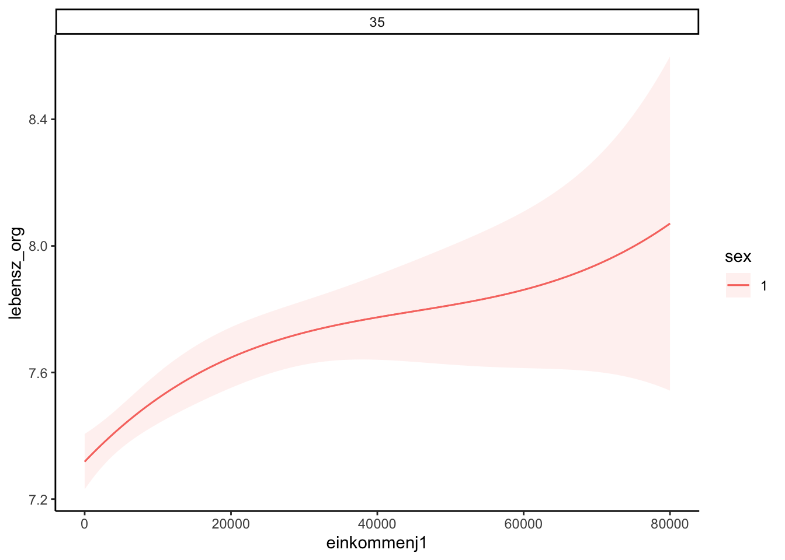
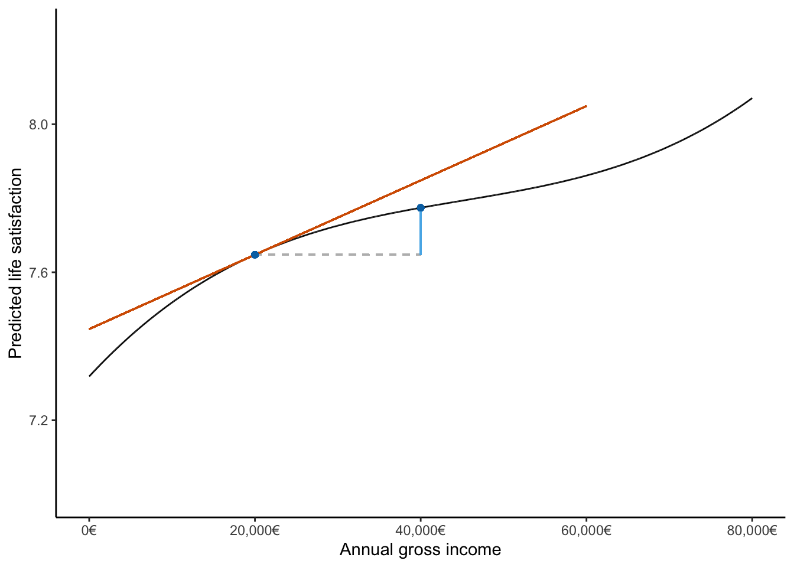

source(here::here("scripts/load.R"))German Socio-Economic Panel Study
Before we start, let’s execute a helper script that loads the necessary dependencies.
Overview
This document contains the analysis code underlying the running example in the manuscript section on target quantities, as well as the code that generates Figure 1. Annotations were later added manually using PowerPoint.
Data Source
We analyze freely available practice data from the German Socio-Economic Panel Study (SOEP). The data can be downloaded from the SOEP website (https://www.diw.de/en/diw_01.c.836543.en/soep_practice_dataset.html). We are using the English version (DOI: 10.5684/soep.practice.v36).
soep <- read_dta(here("data/practice_en/practice_dataset_eng.dta"))
head(soep)# A tibble: 6 × 15
id syear sex alter anz_pers anz_kind bildung erwerb branche gesund_org lebensz_org einkommenj1 einkommenj2 einkommenm1 einkommenm2
<dbl> <dbl> <dbl+lbl> <dbl> <dbl> <dbl> <dbl+lbl> <dbl+lbl> <dbl+lbl> <dbl+lbl> <dbl+lbl> <dbl+lbl> <dbl+lbl> <dbl+lbl> <dbl+lbl>
1 194 2015 1 [[1] female] 59 2 0 10.5 2 [[-2] Employed part-time] 84 [[84] Public administration and defense; compulsory social security] 4 [[4] Not so well] 6 28679. 0 1659. 0
2 194 2016 1 [[1] female] 60 2 0 10.5 2 [[-2] Employed part-time] 84 [[84] Public administration and defense; compulsory social security] 3 [[3] Satisfactory] 5 19962. 0 1809. 0
3 194 2017 1 [[1] female] 61 2 0 10.5 2 [[-2] Employed part-time] 84 [[84] Public administration and defense; compulsory social security] 3 [[3] Satisfactory] 7 22228. 0 1849. 0
4 194 2018 1 [[1] female] 62 2 0 10.5 2 [[-2] Employed part-time] 84 [[84] Public administration and defense; compulsory social security] 5 [[5] Badly] 5 22100. 0 1617. 0
5 194 2019 1 [[1] female] 63 2 0 10.5 2 [[-2] Employed part-time] 84 [[84] Public administration and defense; compulsory social security] 4 [[4] Not so well] 6 23158. 0 1901. 0
6 19052 2015 1 [[1] female] 74 2 0 10 5 [[5] Not employed] NA 2 [[2] Well] 8 0 0 0 0 Model Specification
We fit a flexible model that predicts life satisfaction based on sex, age, and income. The model uses basis splines for age and income to capture non-linear relationships and includes all interactions between variables. We limit our analysis to people under the age of 60.
mod <- lm(
lebensz_org ~ sex * bs(alter, df = 3) * bs(einkommenj1, df = 3),
data = soep[soep$alter < 60, ]
)Let’s examine the model coefficients to confirm they are not easily interpretable in their raw form:
summary(mod)
Call:
lm(formula = lebensz_org ~ sex * bs(alter, df = 3) * bs(einkommenj1,
df = 3), data = soep[soep$alter < 60, ])
Residuals:
Min 1Q Median 3Q Max
-7.8030 -0.6359 0.3642 1.0181 3.2115
Coefficients:
Estimate Std. Error t value Pr(>|t|)
(Intercept) 7.8621 0.1032 76.148 < 2e-16 ***
sex -0.3415 0.1380 -2.475 0.01332 *
bs(alter, df = 3)1 -1.2071 0.3793 -3.183 0.00146 **
bs(alter, df = 3)2 -1.1611 0.2675 -4.341 1.43e-05 ***
bs(alter, df = 3)3 -0.9721 0.1881 -5.169 2.39e-07 ***
bs(einkommenj1, df = 3)1 -2.9110 1.9740 -1.475 0.14031
bs(einkommenj1, df = 3)2 19.8332 19.4858 1.018 0.30877
bs(einkommenj1, df = 3)3 -0.8611 132.6094 -0.006 0.99482
sex:bs(alter, df = 3)1 1.2525 0.4806 2.606 0.00917 **
sex:bs(alter, df = 3)2 0.5992 0.3352 1.788 0.07380 .
sex:bs(alter, df = 3)3 0.4095 0.2492 1.643 0.10035
sex:bs(einkommenj1, df = 3)1 -2.6841 3.2689 -0.821 0.41160
sex:bs(einkommenj1, df = 3)2 65.7747 40.8548 1.610 0.10743
sex:bs(einkommenj1, df = 3)3 -457.9446 394.2805 -1.161 0.24547
bs(alter, df = 3)1:bs(einkommenj1, df = 3)1 8.7901 3.9310 2.236 0.02536 *
bs(alter, df = 3)2:bs(einkommenj1, df = 3)1 3.1041 2.3496 1.321 0.18649
bs(alter, df = 3)3:bs(einkommenj1, df = 3)1 3.9785 2.2388 1.777 0.07558 .
bs(alter, df = 3)1:bs(einkommenj1, df = 3)2 -27.3680 28.4171 -0.963 0.33552
bs(alter, df = 3)2:bs(einkommenj1, df = 3)2 -12.4798 18.6404 -0.670 0.50319
bs(alter, df = 3)3:bs(einkommenj1, df = 3)2 -17.4873 20.0521 -0.872 0.38317
bs(alter, df = 3)1:bs(einkommenj1, df = 3)3 -21.9448 181.2849 -0.121 0.90365
bs(alter, df = 3)2:bs(einkommenj1, df = 3)3 8.6725 121.1156 0.072 0.94292
bs(alter, df = 3)3:bs(einkommenj1, df = 3)3 -1.0620 135.1902 -0.008 0.99373
sex:bs(alter, df = 3)1:bs(einkommenj1, df = 3)1 2.9322 6.7533 0.434 0.66415
sex:bs(alter, df = 3)2:bs(einkommenj1, df = 3)1 4.4830 3.6165 1.240 0.21514
sex:bs(alter, df = 3)3:bs(einkommenj1, df = 3)1 1.8393 3.9502 0.466 0.64149
sex:bs(alter, df = 3)1:bs(einkommenj1, df = 3)2 -124.9928 65.3625 -1.912 0.05585 .
sex:bs(alter, df = 3)2:bs(einkommenj1, df = 3)2 -56.0276 36.8202 -1.522 0.12812
sex:bs(alter, df = 3)3:bs(einkommenj1, df = 3)2 -68.1158 44.7625 -1.522 0.12810
sex:bs(alter, df = 3)1:bs(einkommenj1, df = 3)3 910.8846 570.4201 1.597 0.11031
sex:bs(alter, df = 3)2:bs(einkommenj1, df = 3)3 256.8281 346.2656 0.742 0.45827
sex:bs(alter, df = 3)3:bs(einkommenj1, df = 3)3 528.8416 415.4596 1.273 0.20307
---
Signif. codes: 0 '***' 0.001 '**' 0.01 '*' 0.05 '.' 0.1 ' ' 1
Residual standard error: 1.63 on 16260 degrees of freedom
(589 observations deleted due to missingness)
Multiple R-squared: 0.0339, Adjusted R-squared: 0.03205
F-statistic: 18.4 on 31 and 16260 DF, p-value: < 2.2e-16Calculating Various Quantities
Now we’ll demonstrate different types of marginal effects calculations using a hypothetical 35-year-old woman as our example.
Predictions
First, let’s predict the life satisfaction of a 35-year-old woman who earns €20,000:
prediction_20000 <- predictions(mod,
newdata = data.frame(sex = 1, alter = 35, einkommenj1 = 20000)
)
prediction_20000| Estimate | Std. Error | z | Pr(>|z|) | S | 2.5 % | 97.5 % | sex | alter | einkommenj1 |
|---|---|---|---|---|---|---|---|---|---|
| 7.65 | 0.0489 | 156 | <0.001 | Inf | 7.55 | 7.74 | 1 | 35 | 20000 |
What if she earned twice as much (€40,000)?
prediction_40000 <- predictions(mod,
newdata = data.frame(sex = 1, alter = 35, einkommenj1 = 40000)
)
prediction_40000| Estimate | Std. Error | z | Pr(>|z|) | S | 2.5 % | 97.5 % | sex | alter | einkommenj1 |
|---|---|---|---|---|---|---|---|---|---|
| 7.77 | 0.0683 | 114 | <0.001 | Inf | 7.64 | 7.91 | 1 | 35 | 40000 |
Comparisons
We can directly compare these two predictions to see the effect of doubling income:
cmp <- comparisons(
mod,
newdata = data.frame(sex = 1, alter = 35, einkommenj1 = 20000),
variables = list("einkommenj1" = c(20000, 40000))
)
cmp| Estimate | Std. Error | z | Pr(>|z|) | S | 2.5 % | 97.5 % | sex | alter | einkommenj1 |
|---|---|---|---|---|---|---|---|---|---|
| 0.127 | 0.07 | 1.81 | 0.0697 | 3.8 | -0.0102 | 0.264 | 1 | 35 | 20000 |
Increasing income from €20,000 to €40,000 results in an increase of approximately 0.127 points in life satisfaction.
Slopes
How much does life satisfaction increase with income at the €20,000 level?
slope_20000 <- slopes(mod,
newdata = data.frame(sex = 1, alter = 35, einkommenj1 = 20000),
variables = "einkommenj1"
)
slope_20000| Estimate | Std. Error | z | Pr(>|z|) | S | 2.5 % | 97.5 % | sex | alter | einkommenj1 |
|---|---|---|---|---|---|---|---|---|---|
| 1e-05 | 2.65e-06 | 3.8 | <0.001 | 12.7 | 4.86e-06 | 1.52e-05 | 1 | 35 | 20000 |
The slope is interesting, but it is often more useful to express the association between the outcome and the predictor in terms of a discrete change. For this, we can use the variables argument in the comparisons function.
cmp <- comparisons(mod,
newdata = data.frame(sex = 1, alter = 35, einkommenj1 = 20000),
variables = list("einkommenj1" = 10000)
)
cmp| Estimate | Std. Error | z | Pr(>|z|) | S | 2.5 % | 97.5 % | sex | alter | einkommenj1 |
|---|---|---|---|---|---|---|---|---|---|
| 0.0786 | 0.0311 | 2.53 | 0.0116 | 6.4 | 0.0176 | 0.14 | 1 | 35 | 20000 |
Our model suggests that increasing income by €10,000, starting from the €20,000 level, is associated with an increase in life satisfaction of approximately 0.079 points.
Generate Figure 1
In the main manuscript, we illustrate the different quantities calculated above in Figure 1. This figure shows the predictions, comparisons, and slopes that characterize the estimated relationship between income and life satisfaction for a specific type of individual.
Quick Plot Option
We could directly create a plot using the marginaleffects package:
library(patchwork)
plot_predictions(mod, condition = list(
einkommenj1 = 0:80000,
sex = 1,
alter = 35))
Custom Plot
However, for better control over the visualization, let’s create a custom plot that illustrates the different types of quantities we calculated above.
First, we generate predictions across a range of income values for our hypothetical 35-year-old woman:
hypothetical_woman <- data.frame(
sex = 1,
alter = 35,
einkommenj1 = 0:80000
)
hypothetical_predictions <- predictions(mod, newdata = hypothetical_woman)
head(hypothetical_predictions)| Estimate | Std. Error | z | Pr(>|z|) | S | 2.5 % | 97.5 % |
|---|---|---|---|---|---|---|
| 7.32 | 0.0447 | 164 | <0.001 | Inf | 7.23 | 7.41 |
| 7.32 | 0.0447 | 164 | <0.001 | Inf | 7.23 | 7.41 |
| 7.32 | 0.0447 | 164 | <0.001 | Inf | 7.23 | 7.41 |
| 7.32 | 0.0447 | 164 | <0.001 | Inf | 7.23 | 7.41 |
| 7.32 | 0.0447 | 164 | <0.001 | Inf | 7.23 | 7.41 |
| 7.32 | 0.0447 | 164 | <0.001 | Inf | 7.23 | 7.41 |
hypothetical_woman$lebensz_org <- hypothetical_predictions$estimateNow we set up the plot styling:
slope_range <- c(0, 60000)
color_prediction <- "#0072B2"
color_comparison <- "#56B4E9"
color_slope <- "#D55E00"
color_neutral <- "#BBBBBB"Finally, we create the plot that visualizes predictions, comparisons, and slopes:
ggplot(data = hypothetical_woman, aes(x = einkommenj1, y = lebensz_org)) +
geom_line() +
# Comparison 20,000 vs 40,000 (connected with segments that form a slope triangle)
geom_segment(
x = 20000,
xend = 40000,
y = prediction_20000$estimate,
color = color_neutral,
linetype = "dashed"
) +
geom_segment(
x = 40000,
y = prediction_20000$estimate,
yend = prediction_40000$estimate,
color = color_comparison,
linetype = "solid"
) +
# Slope line at an income of 20,000
geom_segment(
x = slope_range[1],
xend = slope_range[2],
y = prediction_20000$estimate - (20000 - slope_range[1]) * slope_20000$estimate,
yend = prediction_20000$estimate + (slope_range[2] - 20000) * slope_20000$estimate,
color = color_slope
) +
# Predictions at 20,000 and 40,000
geom_point(x = 20000, y = prediction_20000$estimate, color = color_prediction) +
geom_point(x = 40000, y = prediction_40000$estimate, color = color_prediction) +
# Layout, make it look nicer
xlab("Annual gross income") +
ylab("Predicted life satisfaction") +
coord_cartesian(ylim = c(7, 8.25)) +
scale_x_continuous(
labels = label_dollar(prefix = "", suffix = "€", big.mark = ",")
)